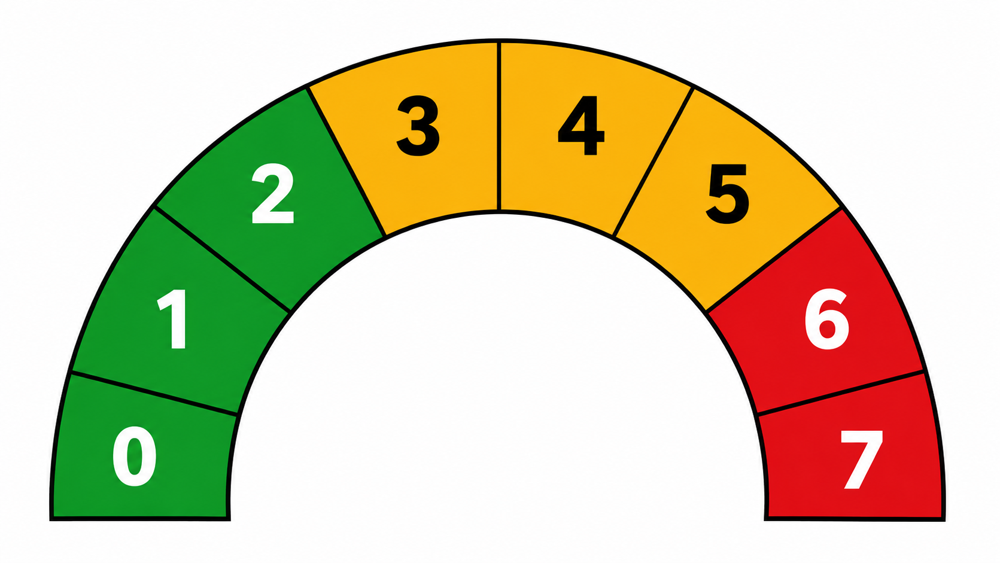
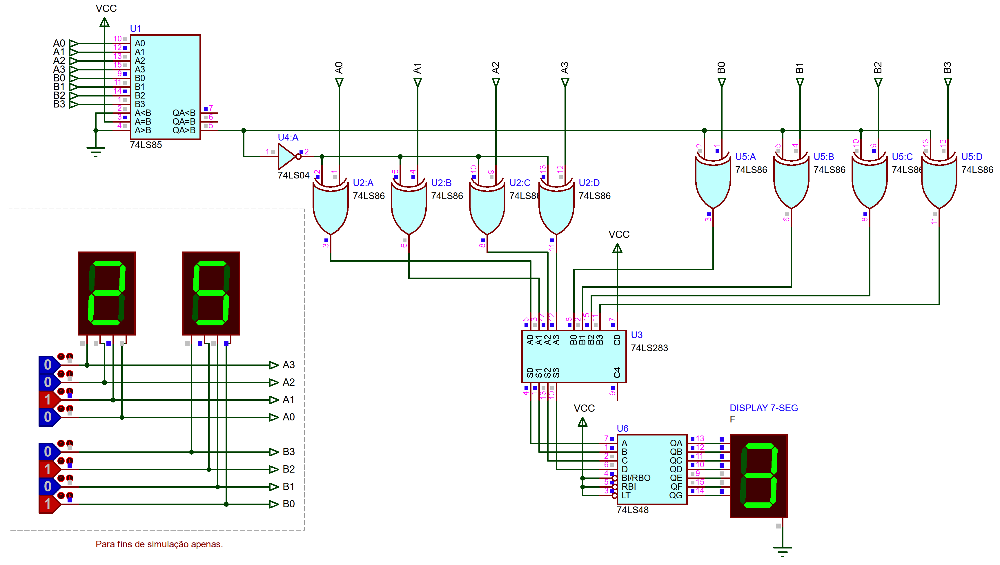
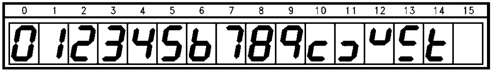
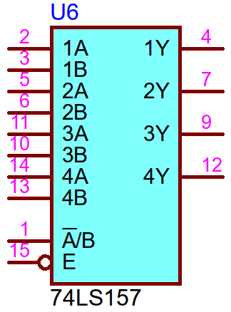
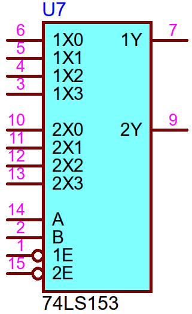
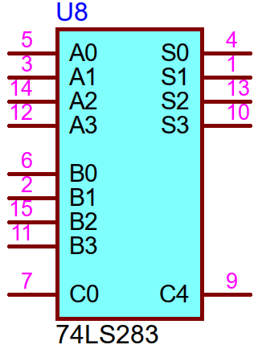
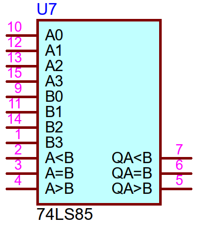
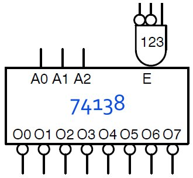

Questão 1: projete o circuito digital capaz de ativar 3 leis: um verde, um amarelo e outro vermelho para indicar faixas de rotação de um motor. Algo como:

O detalhe é que na saída no motor existe o medidor de RPM (rotações do motor), cuja saída é digital em 3-bits. Este medidor mede rotações na faixa de 0 até 7000 RPM.
Apresente:
a) A tabela verdade deste circuito, relacionando faixas de RPM do motor
Questão 2: Projete um circuito digital capaz de fazer:
onde
Apresente:
a) um diagrama em blocos do circuito;
b) o diagrama elétrico final do circuito;
c) Simulações/Explicações para os 3 seguintes casos:
c.1)
Dica: Note um detalhe nesta operação:
Conclusão: Este circuito nunca produz um número negativo. Mas digitalmente é maiz fácil acrescentar um comparador ao circuito para descobrir se
Resposta Possível:

Diferenças entre 74LS47 e 74LS48
| Característica | 74LS47 | 74LS48 |
|---|---|---|
| Display compatível | Ânodo Comum (Vcc no pino comum) | Cátodo Comum (GND no pino comum) |
| Ativação da Saída | Nível Lógico Baixo (Active-Low) | Nível Lógico Alto (Active-High) |
| Estado para Ativar segmento | Enviar 0V (GND) para o segmento | Enviar 5V (Vcc) para o segmento |
| Tipo de Saída | Coletor Aberto (Open-Collector) | Resistores de Pull-up internos |
| Capacidade de Corrente | Maior capacidade (Drena até 24mA por pino) | Menor capacidade (Fornece até 6mA por pino) |
Tabela de caracteres formada por estes CIs:

Questão 3: Idem a questão 1, mas agora o A/D é de 4-bits. As faixas de conversão são as mesmas da questão 1. Apresente os mesmos itens requeridos na questão. 1
Questão 4: Projete um circuito aritmético digital capaz de realizar a operação abaixo:
xxxxxxxxxxSe A > BF = 2ASenãoF = A + BFim-Se
Apresente um diagrama em blocos (60%), o diagrama elétrico (10%), e simule 2 casos (30%) demostrando como inernamente o circuito resolve estes casos:
4.a)
Dica: eventualmente você necessitará do CI Comparador de Magnitude para palavras de 4-bits de entrada, CO 74LS85.
Dado: Símbolo de algumas pastilhas (Material de Consulta):
| 4 74LS157 | 2 74LS153 |
|---|---|
 |  |
| Somador binário 4-bits: 74LS283 | Comparador Magnitude 4-bits: 74LS85 |
 |  |
Questão 5: Forme um MUX de 8 canais de entrada, usando 2
Dado: Símbolo lógico do CI 74LS153:
Questão 6: Forme um DEC de 4 para 16 linhas usando apenas 2
Dado: Símbolo lógico do CI 74138:

Deadline: 30/09/2026 (entrega no inicio da prova: impresso ou manuscrito legível).
Fernando Passsold, em 23/09/2026; atualizado em 24/09/2026.